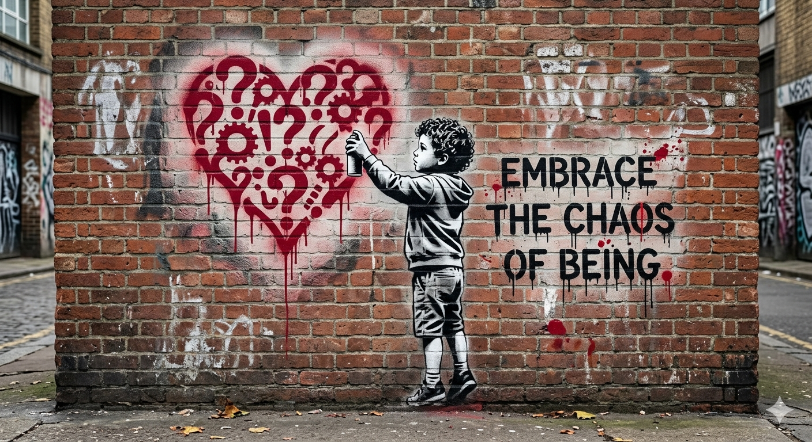

Image Scanner Test Page
This page is used to test your unused image detection tool.
1. Used Images (HTML)

2. Used Image (CSS Background)
3. Used Image (JS Loaded)
4. Lazy Loading Test
5. Unused Images (should NOT appear in DOM usage)